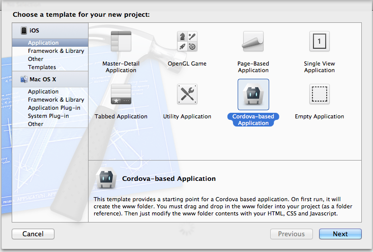
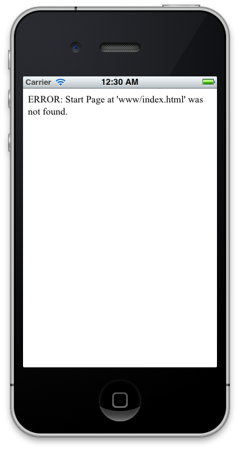
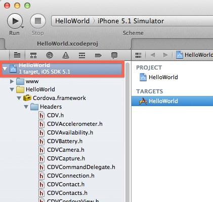

Getting Started with iOS
このガイドは、 Apache Cordova のための開発環境セットアップ方法、また Apache Cordova のサンプルアプリの動かし方を解説します。
ビデオチュートリアル
必要なもの
- Xcode 4.x
- Intel ベースの Mac OS X Lion (10.7)
- デバイスへのインストールに必要なもの:
- Apple iOS デバイス (iPhone, iPad, iPod Touch)
- iOS デベロッパー証明書
SDK と Apache Cordova のインストール
- Mac App Store から Xcode をインストールします。
-
Apache Cordova の最新版をダウンロードします。
- ダウンロードしたものを解凍します
- Apache Corder iOS は
lib/iosディレクトリ以下にあります
新規プロジェクトの作成
- Xcode を起動します
- メニューから File を選択します
- New を選択し、 New Project... を選択します
-
テンプレートのリストから Cordova-based Application を選択します

Next ボタンをクリックします
-
Product Name と Company Identifier を記入します

注意: Use Automatic Reference Counting のチェックボックスにチェックを 入れないでください
- Next ボタンをクリックします
- 新しいアプリを保存するフォルダーを選択します
- Create ボタンをクリックします
Apache Cordova プロジェクトが作成出来ました。次に、プロジェクトと web ディレクトリを関連付ける必要があります。この作業は、 Xcode のプロジェクトテンプレートと制約のため必要となります。
-
左上にある Run ボタンをクリックします
- ビルドが成功し、 iOS シミュレーターが起動します
- iOS シミュレーターが、 www/index.html was not found と警告しているのが確認できるはずです
-
wwwディレクトリへのリファレンスをプロジェクトに追加することによりこれを修正します

左側のサイドバーにある Project Navigator の中のプロジェクトアイコンの上で右クリックし、 Show in Finder を選択します
-
Finder で、プロジェクトの中に
wwwディレクトリが確認できるはずです
-
wwwフォルダーを Xcode 4 にドラッグします- アプリフォルダーの中に
wwwディレクトリをドラッグしないでください - 以下の画像赤い四角の枠で囲ってある部分にドラッグしてください:

- アプリフォルダーの中に
-
正確に
wwwフォルダーがドラッグアンドドロップされると、いくつかのオプションがある画面が表示されます- Create folder references for any added folders を選択します
- Finish ボタンをクリックします

Hello World の作成
- Xcode の Project Navigator にある
wwwフォルダーを選択します -
index.htmlファイルを選択します -
<body>タグの後に以下を追加します:<h1>Hello World</h1>
関連する JavaScript や CSS ファイルも追加することができます。
シミュレーターへのデプロイ
- ツールバーにあるドロップダウンメニューから Active SDK を iOS version Simulator に変更します
- プロジェクトウィンドウのツールバーにある Run ボタンをクリックします
デバイスへのデプロイ
-
Supporting Files グループの中にある
あなたのアプリ名-Info.plistを開きます -
BundleIdentifier を Apple から提供された Identifer 、または自分の Identifer に変更します
- もし開発者ライセンスを持っている場合は、 [Assistant] (http://developer.apple.com/iphone/manage/overview/index.action) よりアプリを登録できます
- ツールバーにあるドロップダウンメニューから Active SDK を あなたのDevice名 に変更します
- デバイスを USB で接続する必要があります
-
プロジェクトウィンドウのツールバーにある Run ボタンをクリックします

アプリを作成
これで Xcode プロジェクトのセットアップが完了し、シミュレーターまたはデバイスでビルドし動かすことが出来ます。
アプリを書くために、 Xcode を使用する必要はありません。
あなたの好きなテキストエディターを使い、 Xcode でリビルド作業を行えます。
Xcode は自動的に www ディレクトリ内にあるファイルの変化を検出します。